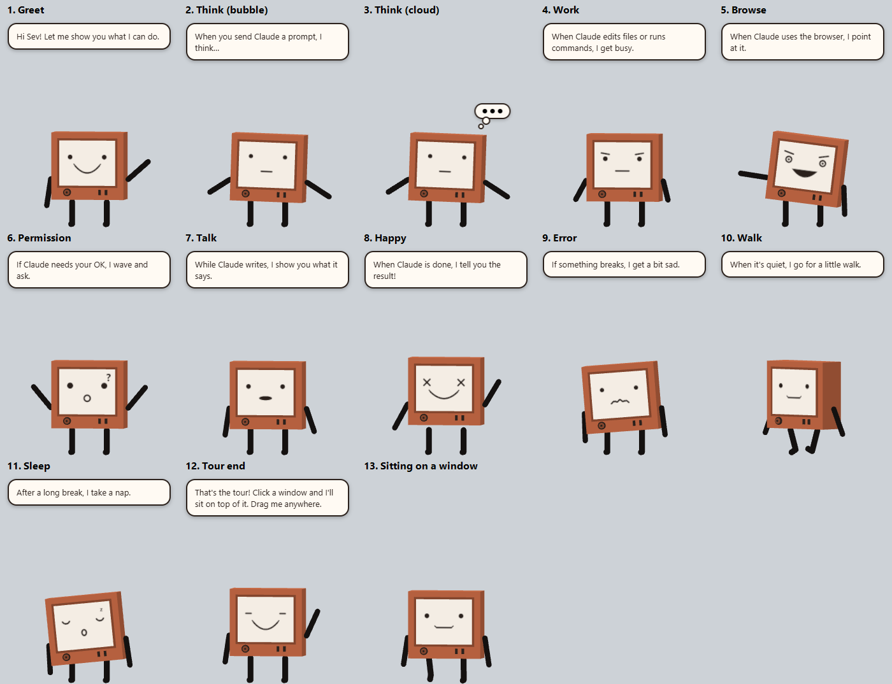
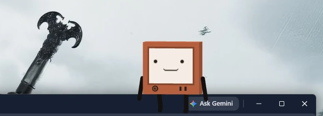
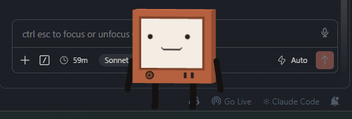
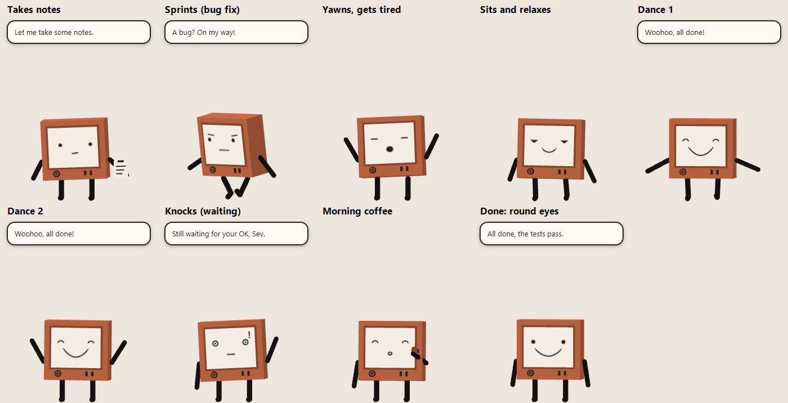

Give Claude
a face.
Rusty is a little robot who lives on your desktop. He thinks when Claude thinks, grabs a hammer when it edits your code, waves when it needs your OK, and cheers and reads the answer aloud when it's done.
- Free & open source
- Runs 100% locally
- Windows · macOS (beta)
He reacts to everything Claude does.
Rusty listens to Claude Code's hooks, in the terminal or the Claude desktop app's Code tab. You can tell what's going on with a glance, without switching windows.
He thinks
Hand on his chin, with a thought cloud above his head.
He hammers away
Out comes the hammer, and the stepped stop-motion swings begin.
He takes notes
A little notepad, scribbling along while Claude digs in.
He asks, out loud
Both arms waving. Ignore him for a minute and he knocks on his screen.
He cheers and reads it
The answer shows in a speech bubble and he reads the first lines aloud.
He dances
Long jobs deserve a little celebration.
He sprints
Back and forth along the taskbar until it's fixed.
He strolls
Walks the taskbar, sits on your active window, watches your mouse, naps.
He sips coffee
Or yawns. Mention coffee in a prompt and he'll have a sip too.
He lives on your desktop, not in a tab.
A transparent overlay that stays out of your way. Clicks pass right through except where Rusty is. Drag him anywhere; click a window and he hops on top of it.




Up and running in two minutes.
You need Node.js 20+ and Claude Code 2.1+. The first start downloads the voice model (about 326 MB) once.
Get Rusty
Clone the repo and install.
git clone https://github.com/Sew-a/rusty-companion.git cd rusty-companion npm install
Wake him up
He appears above your taskbar, bottom right.
npm start
Connect Claude
Adds local hooks (your settings are backed up first). New Claude Code sessions now drive Rusty.
npm run hooks:install
Optional: five spoken skills (discussion, brainstorm, recap, quiz, build-and-learn) make Claude answer conversationally, so Rusty can read the whole reply aloud. See the README.
Private by design.
Nothing leaves your machine
Claude Code sends hook events to 127.0.0.1 only. No accounts, no analytics, no cloud.
A voice that runs on your CPU
Kokoro-82M speaks offline. Speech starts in about a second.
Never in Claude's way
Hooks answer instantly and never approve or deny anything. If Rusty isn't running, Claude doesn't notice.
Your AI deserves a body.
Rusty is free and open source. Star the repo, try him out, and tell us what he should do next.